Emergent rewrites in knot theory and logic
I explain in what sense new graph rewrite systems emerge from given ones, with two examples:
- the emergence of the R3 (Reidemeister 3) rewrite from R1, R2 and some uniform continuity assumptions, and relations to curvature,
- the emergence of the beta rewrite in lambda calculus from the shuffle rewrite and relations to the commutativity of the addition of vectors in the tangent space of a manifold
From sub-riemannian geometry to emergent algebras
A riemannian manifold (X,g) is a length metric space (X,d) by Hopf-Rinow thm.
Problem 1: recover (X,g) from (X,d).
- (1935, A. Wald) problem 1 for 2-dim manifolds.
- (1948, A.D. Alexandrov) a metric notion of (sectional) curvature + smoothness solves 2-dim manifolds.
- (1982, A.D. Alexandrov) conjecture that the same is true for n-dim manifolds.
- (1998, I.G. Nikolaev) proves (Alexandrov conjecture) for n-dim manifolds.
but (
1996, M. Gromov) asks for a solution of
Problem 2: recover sub-riemannian (X,D,g) from (X,d).
- (X,D,g) sub-riemannian if D completely non-integrable distribution and g a metric on D.
- by Hopf-Rinow (X,D,g) is a length metric space (X,d), with d the CC distance.
Sub-riemannian spaces are weird! (except when riemannian)
- metric (Hausdorff) dimension > topological dimension
- not Alexandrov spaces
- tangent spaces are nilpotent (Carnot) groups, not vector spaces
- Carnot groups have a peculiar differential calculus (Pansu derivative)
Sub-riemannian spaces (techniques) are useful!
- (1981, M. Gromov) finitely generated groups of polynomial growth same as those groups which have nilpotent subgroups of finite index
- (1989, P. Pansu) proves Rademacher thm for Carnot groups, which implies a short proof for Margulis-Mostow rigidity
- (2006, J.R. Lee, A. Naor) counter-example to Goemans-Linial conjecture by using the Heisenberg group as a SR space
- (2010, E. Hrushovski) (2011, E. Breuillard, B. Green, T. Tao) Approximate groups are essentially Carnot groups
Drawing conventions
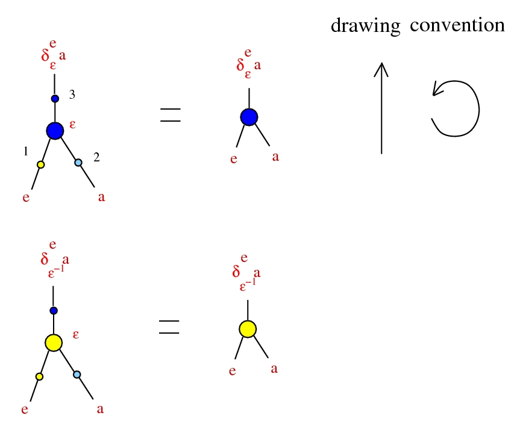
Emergent algebras
introduced as algebras in
arXiv:0907.1520, as a λ calculus in
arXiv:1807.02058.
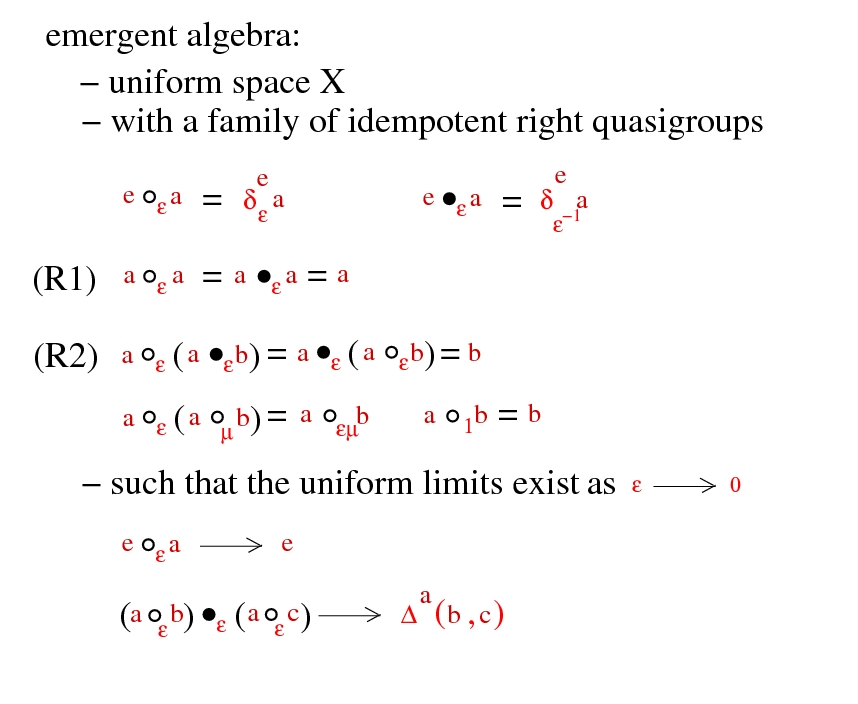
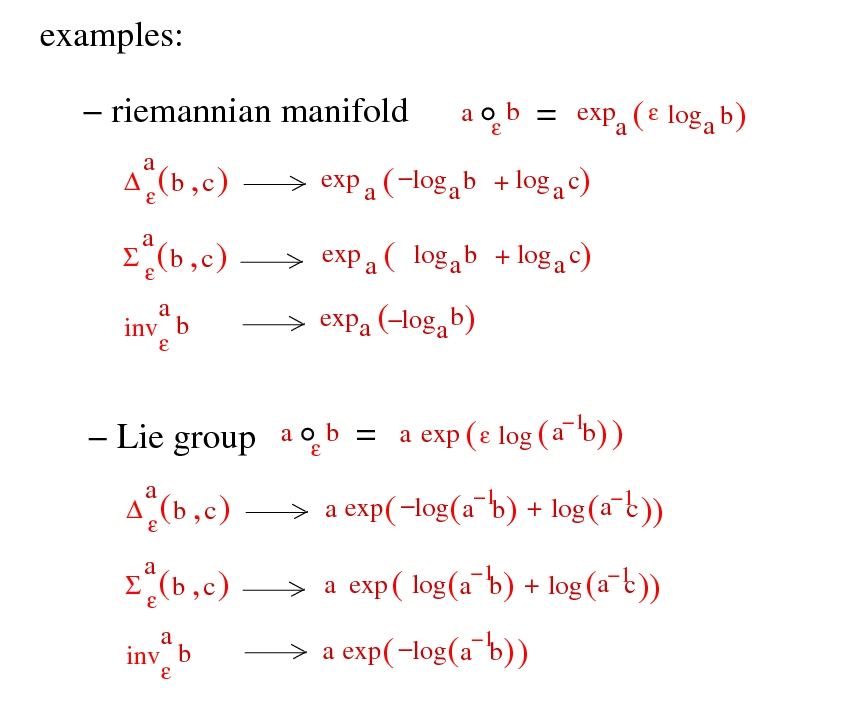
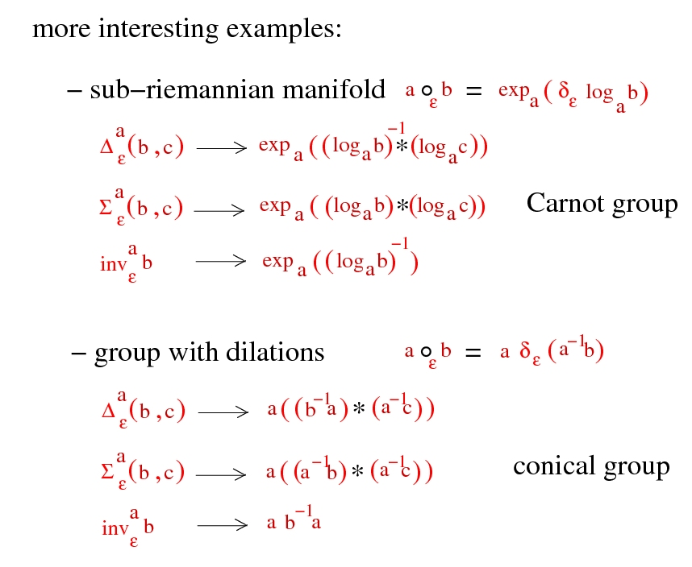
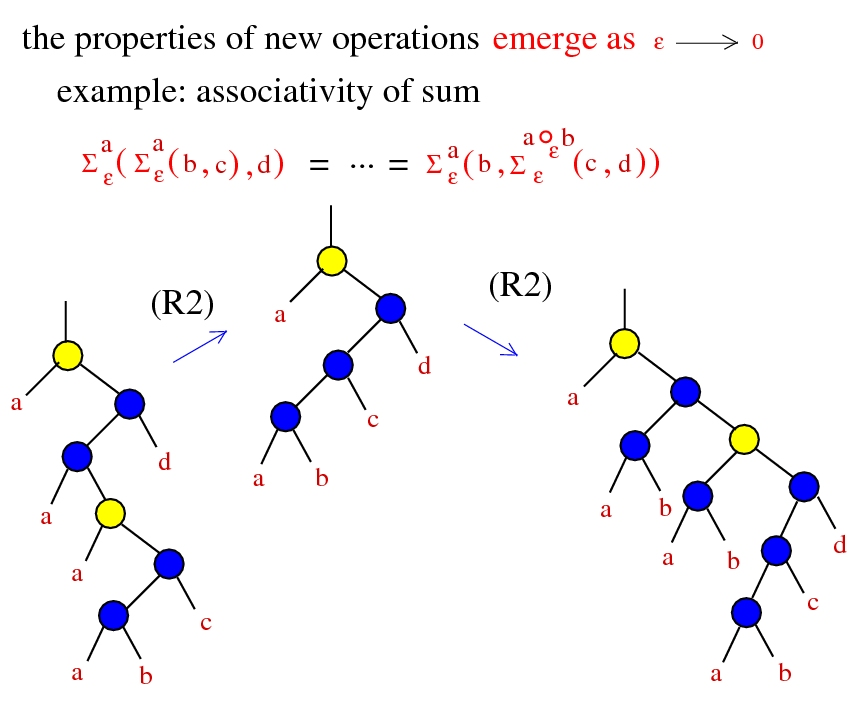
Drawing conventions 2
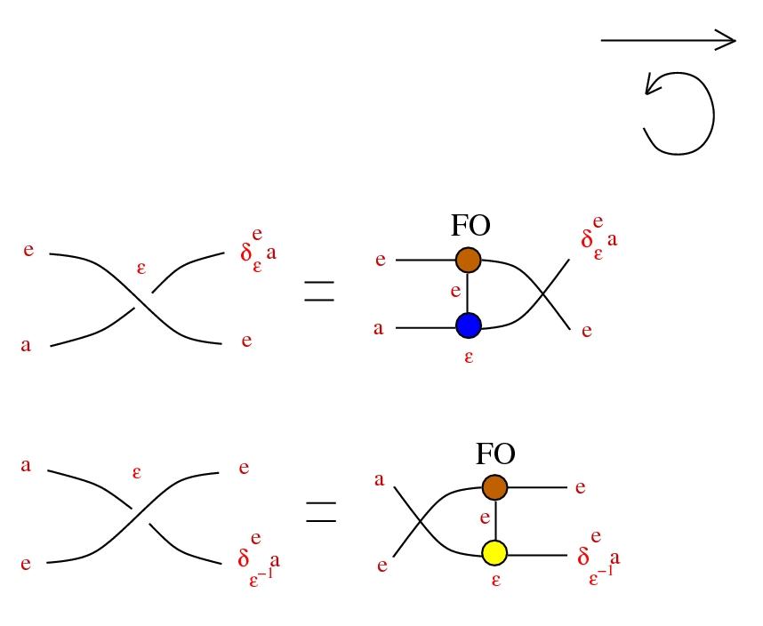
Tangles
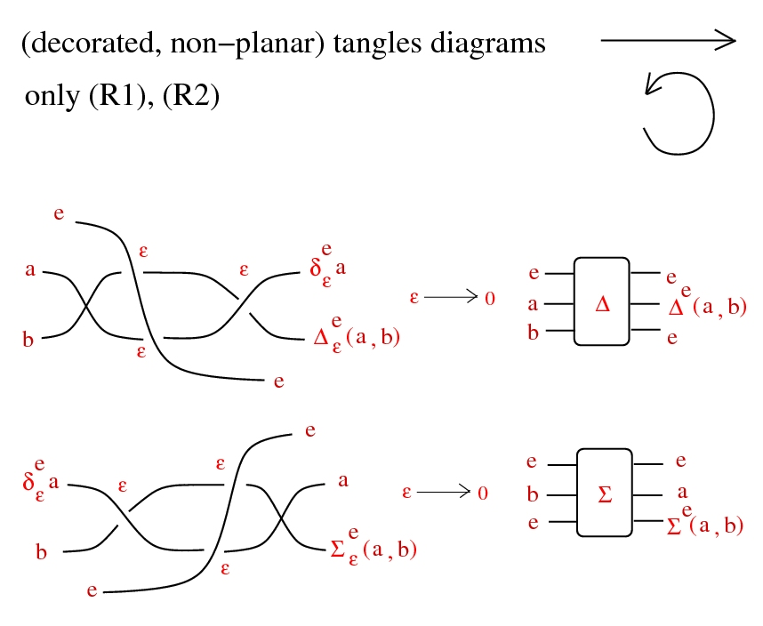
Chora
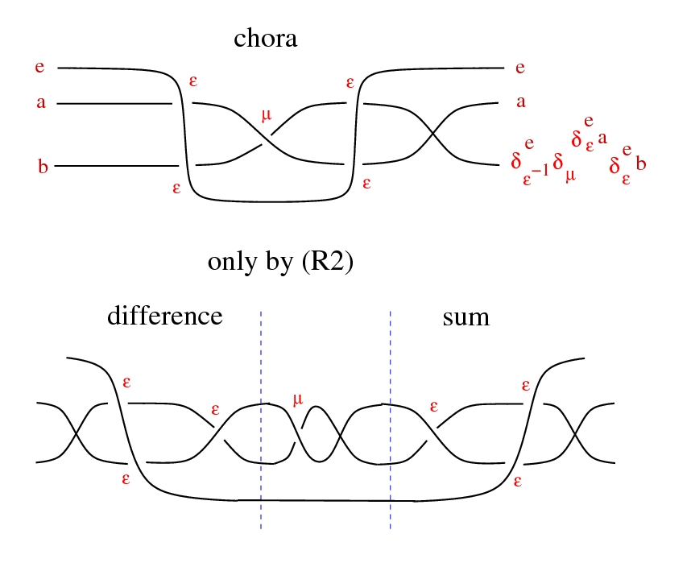
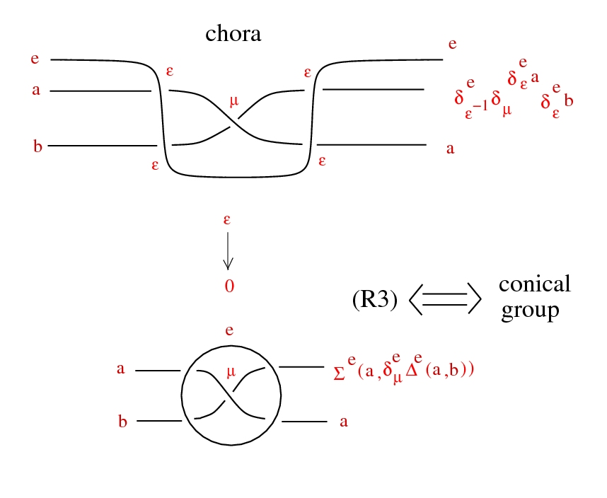
Conical groups
groups with:
an action by automorphisms
a ⋅ (x * y) = (a ⋅ x) * (a ⋅ y)
which are uniformly contractive:
ε → 0, ε ⋅ x → e, uniformly wrt x in compact set
Examples
- (normed) finite dim vector space X, * = +, Γ = (0, ∞)
- Heisenberg groups:
- - take (H, <,>) complex Hilbert space, X = H × R
- (x,u) * (y,v) = (x + y, u + v + (1/2) Im <x,y>)
- - distribution D from left translate of H in X, is completely nonintegrable
- - metric on D from Re <,>
- - Γ = C ∖ {0}
- a ⋅ (x,u) = (a x , ∣a∣² u )
- or just any Carnot group
Tangles
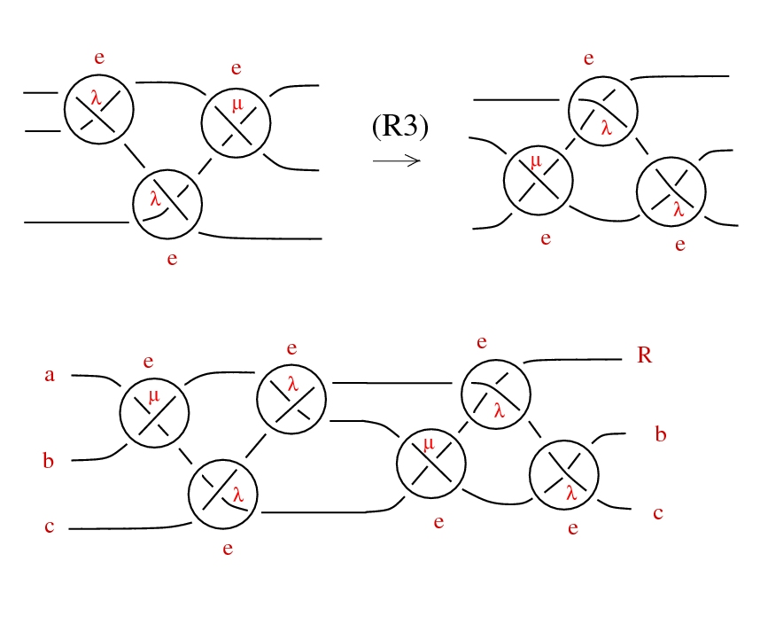
Rescale!
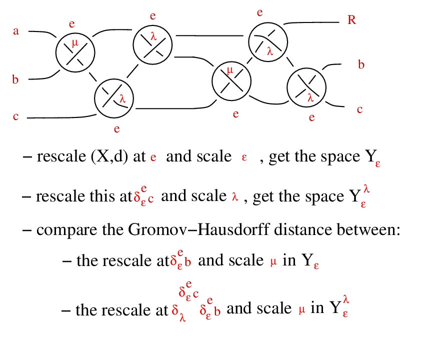
Commutative emergent algebras
The
operation * is commutative iff any of the following:
- - we can do the shuffle trick:
-

- - rays are semigroups, uniformly
- ∀ a, b ∈ Γ, ∃ a+b ∈ Γ, (a ⋅ x) * (b ⋅ x) = (a+b) ⋅ x
- - barycentric condition: ∀ a ∈ Γ, ∃ 1-a ∈ Γ
Let's denote the 3 ports of a dilation node as:
port 1: "from", port 2: "see", port 3: "as"
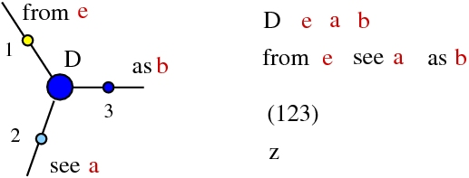
The
operation * is commutative iff all the 6 permutations of ports are also dilations, with coefficients from the anharmonic group:
Pure See!
Lambda calculus
(
1936, A. Church) Untyped λ calculus
is a term rewrite system
Terms:
- variable: x, y, z, ...
- term:
- - variable
- - A B where A, B terms (application)
- - λx.A where x var, A term (abstraction)
Term rewrite rule:
- β-reduction: (λx.D)B → D[x=B]
(1936, A. Church) Pure λ calculus is a term rewrite system
Term rewrite rule:
- β-reduction: (λx.D)B → D[x=B]
(1971, C.P. Wadsworth,
1990, J. Lamping)
graph rewrite system
Emergent lambda
Aplication can be seen as:
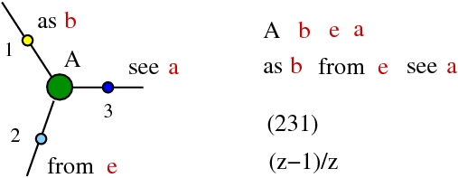
(all the 6 permutations of ports are also dilations, with coefficients from the anharmonic group:
Pure See!)
Abstraction can be seen as:
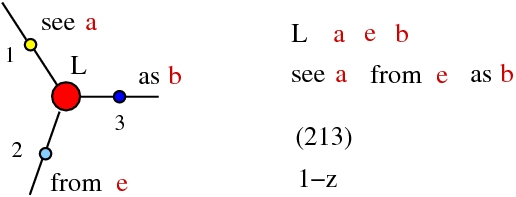
(all the 6 permutations of ports are also dilations, with coefficients from the anharmonic group:
Pure See!)
β rewrite from shuffle
only with dilation nodes:
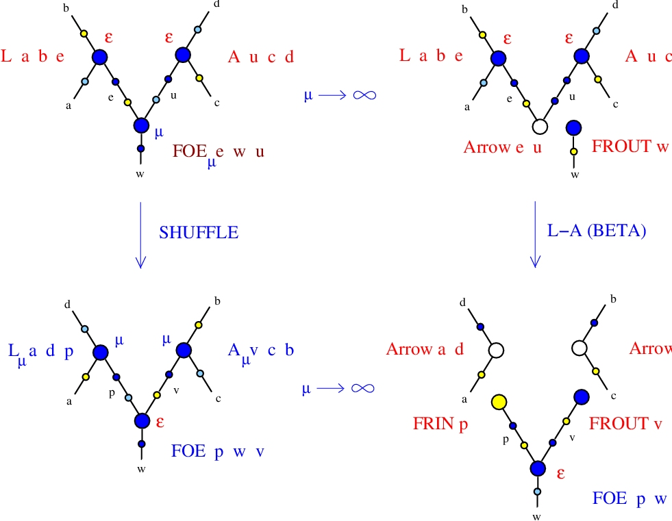
the same with
chemlambda v2 nodes:
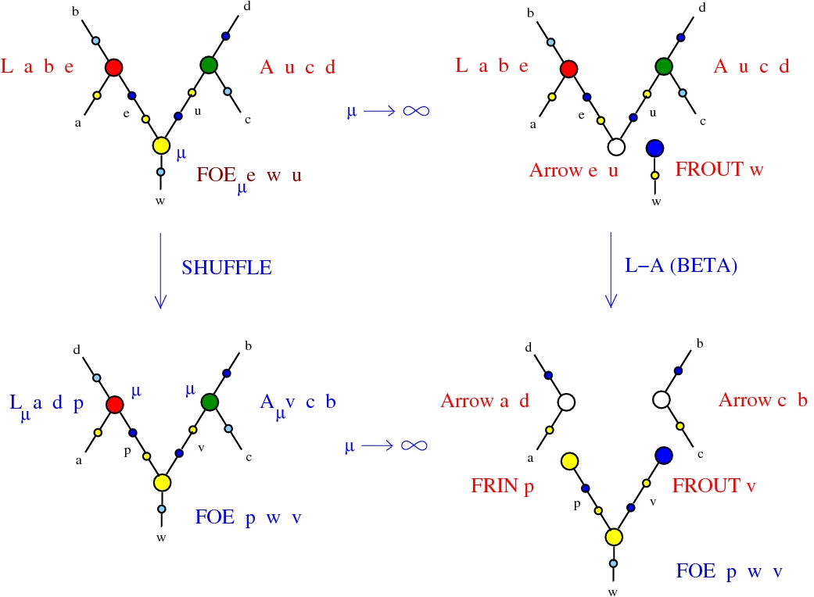